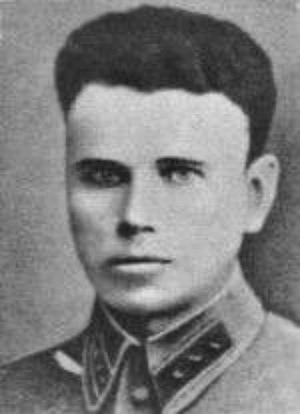

Сумченко Степан Сергеевич

В 1928 году Степан Сумченко был призван в Красную Армию. В 1930 году был назначен командиром отделения, а в 1932 году после окончания Новопетергофского пограничного училища, командиром кавалерийского маневрового взвода Ташработской пограничной заставы в Нарыне Киргизской ССР, затем назначен начальником этой заставы, а затем уполномоченным ОГПУ.В 1938 году Указом Президиума Верховного Совета СССР Степан Сумченко награжден медалью «За отвагу» за выполнение боевой задачи по охране государственной границы. К началу освобождения Западной Белоруссии Сумченко служил помощником начальника 11-го Себежского погранотряда, с сентября 1939 года переведен в Западную Белоруссию, проходит службу в Управлении НКГБ по Барановичской области. 12 декабря 1940 года назначен на должность начальника Слонимского горотдела УНКГБ по Барановичской области (в личном листке на фото указан несколько другой период службы в Слониме — с марта 1941 до начала войны).
На главную